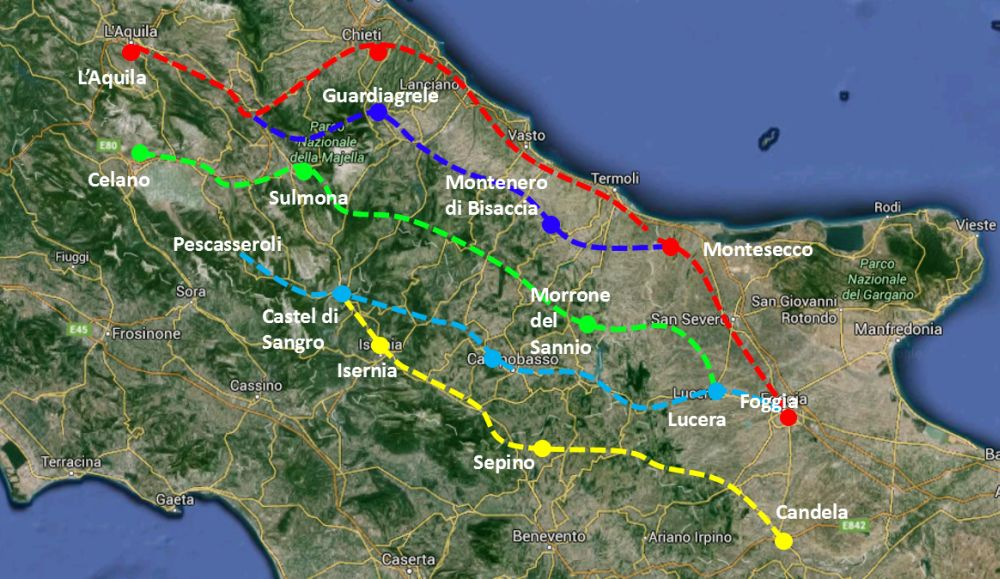
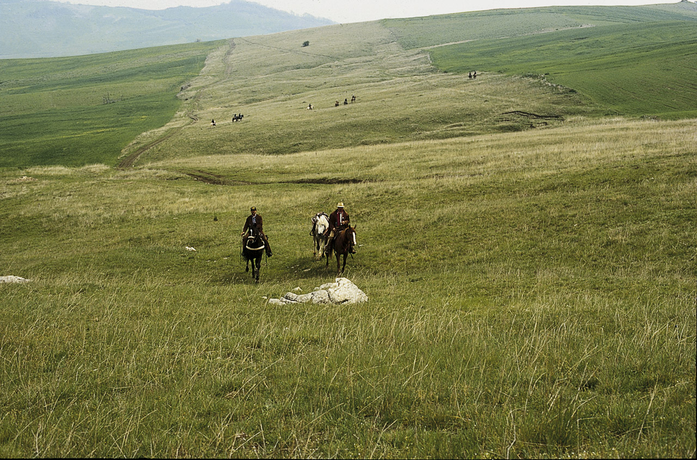

TRATTURI, DI COSA PARLIAMO?
Per Tratturo si indica un largo sentiero erboso, pietroso o in terra battuta, a fondo naturale, largo in media 110 metri, originatosi poiché percorsa dai pastori e dai propri animali per spostarsi e raggiungere stagionalmente due regioni geografiche e climatiche diverse: in autunno verso le pianure più calde,in primavera verso le montagne più fresche che offrono pascoli verdi e abbondanti. Il suo tragitto segna la direttrice principale del complesso sistema reticolare dei percorsi che si snodano e si diramano in sentieri minori costituiti dai tratturelli bretelle che univano tra loro i tratturi principali, dai bracci e dai riposi. Questi percorsi erano utilizzati dai pastori per compiere la transumanza ossia per trasferire con cadenza stagionale mandrie e greggi da un pascolo all’altro.
TRATTURI - CENNI STORICI
La distanza stimata di queste vie é di 3.100 km, si rileva nei territori delle regioni centro-meridionali. Sono diffuse principalmente in Abruzzo, Molise, Umbria, Basilicata, Campania e Puglia. Le loro piste erano percorse nelle stagioni fredde in direzione sud, verso la Puglia, dove esisteva, presso la città di Foggia la Dogana delle Pecore, mentre nei mesi caldi i greggi percorrevano il percorso inverso tornando ai pascoli montani dell’Appennino centrale dove la pastorizia era invece regolata dalla Doganella d’Abruzzo L’intero apparato stradale si origina nelle zone montane e più interne dell’area abruzzese e si conclude nel Tavoliere delle Puglie. Lungo i percorsi si incontravano campi coltivati, piccoli borghi dove si organizzavano le soste, dette stazioni di posta, chiese rurali, icone sacre, pietre di confine o indicatrici del tracciato. I Tratturi costituiscono una preziosa testimonianza di percorsi formatisi in relazione a forme di produzione economica e di conseguente assetto sociale basate sulla pastorizia, perdurati nel tempo e rilanciati a partire dall’epoca normanno-sveva, e poi angioina ed aragonese, così da rappresentare un frammento di storia conservatosi pressoché intatto per almeno sette secoli e via via arrichitosi da ulteriori stratificazioni storiche, tanto da renderli il più imponente monumento della storia economica e sociale dei territori dell’Appennino Abruzzese-Molisano e del Tavoliere delle Puglie.
IL TRATTURO CELANO-FOGGIA
Il tratturo Celano Foggia, con 208 km di lunghezza, tra i cinque Tratturi era il terzo più lungo, dopo il Tratturo Magno da L’Aquila a Foggia (lungo 244 km) e il Pescasseroli-Candela (221 km). Il suo tracciato parte da Celano, nella Marsica, e raggiunge il Tavoliere delle Puglie terminando a Foggia, attraversando vallate ed altopiani in direzione Sud-Est e tenendosi quasi sempre sul versante adriatico dello spartiacque appenninico. Il tratturo entra nel cuore dell’Appennino, con il passaggio nell’altopiano delle Cinquemiglia fino ad arrivare nel cuore del territorio dei sanniti, con il transito e la visita del tempio e parlamento italico di Pietrabbondante.
IL NOSTRO PROGETTO
Il nostro progetto riguarda lo studio del territorio cicostante ad una porzione del tratturo Celano-Foggia, nello specifico un piccolo tratto tra Lucito e Castebottaccio. Abbiamo classificato il territorio attendendoci al Corine Land Cover, ottenendo dei poligoni e sfruttandoli poi per ricavare dati sulla copertura del territorio. In seguito, sfruttando i dati del modello digitale di elevazione (DEM) prelevati dal servizio EarthExplorer, abbiamo generato modelli 3D relativi alla porzione di tratturo analizzata e dell'area circostante. Abbiamo anche creato delle mappe interattive con la classificazione relativa al Corine Land Cover.